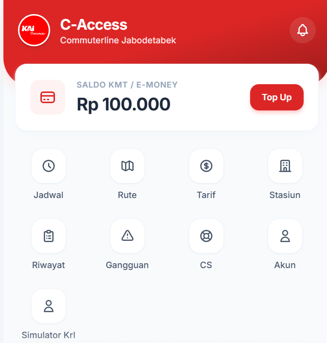
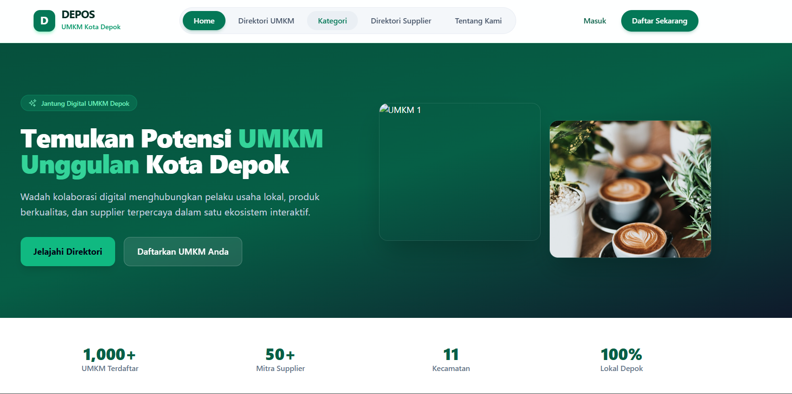

Proyek Pilihan
 Web App
Web App
Website E-Commerce UMKM Laundry
Sistem pemesanan layanan laundry online terintegrasi dengan kalkulator berat, manajemen transaksi, dan database MySQL.
 Aplikasi MOBILE
Aplikasi MOBILE
Aplikasi Mobile KIP Kuliah Tracker
Platform berbasis web & mobile untuk memantau serta memverifikasi alur pencairan dan pencatatan keuangan KIP Kuliah.

Web UI / Mobile UIRedesain UI Aplikasi C-Access KAI Commuter
Redesain antarmuka informasi layanan KRL Commuter Line Jabodetabek yang modern, terintegrasi informasi saldo KMT, fitur jadwal, rute, dan stasiun.
 Website STT NF
Website STT NF
Landing Page Elearning STT NF (e-Elena)
Dashboard akademik platform e-learning modern yang menyajikan informasi mata kuliah aktif, status pengumpulan tugas per semester, dan kuis secara responsif.

Web AppDe-POS UMKM Depok
Platform Point of Sale untuk membantu pelaku UMKM di Depok dalam mengelola transaksi, produk, dan aktivitas penjualan secara lebih praktis dan terintegrasi.
 Event IT & Scoring
Event IT & Scoring
Sistem Operator IT Basket PORPROV Jabar 2026
Dukungan operasional IT, pencatatan/input skor serta statistik pertandingan basket 3x3 & 5x5, sinkronisasi display venue, dan penanganan teknis lapangan selama PORPROV Jabar 2026 di Depok.